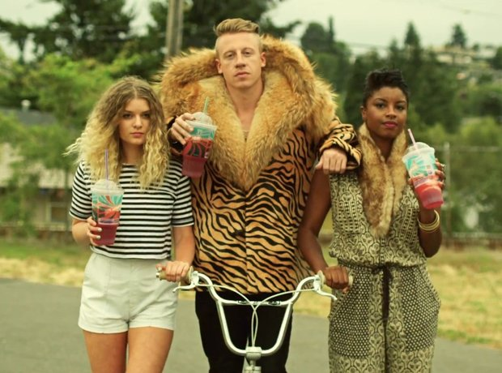

Outfitter for All Seasons!
The colors of the seasonal images are as follows:
- Spring: #2B7129
- Summer: #EBA52B
- Fall: #A81124
- Winter: #005393
The Stranger was founded in July 1991 by Tim Keck, who had previously co-founded the satirical newspaper The Onion, and cartoonist James Sturm. Its first issue was produced out of a home in Seattle's Wallingford neighborhood and was released on September 23, 1991. In1993, The Stranger relocated to Seattle's Capitol Hill district, where its offices would remain until 2020. The Stranger's tagline is "Seattle's Only Newspaper." It was chosen to express the newspaper's disdain for Seattle's then two dailies (the Seattle Times and the now-defunct print edition of the Seattle Post-Intelligencer) and The Stranger's main alternative rival, the Seattle Weekly. The newspaper regularly covers Seattle City Council politics. 
In its early days, The Stranger had a print run of 20,000, and focused on Seattle's University District. It was originally distributed as a single sheet of newsprint wrapped around a wad of coupons redeemable at local businesses. On April 16, 2012, The Stranger won its first Pulitzer Prize. Eli Sanders was awarded a Pulitzer in the Feature Writing category for "The Bravest Woman in Seattle," which the citation describes as "a haunting story of a woman who survived a brutal attack that took the life of her partner, using the woman’s brave courtroom testimony and the details of the crime to construct a moving narrative." The feature appeared in the June 15, 2011 edition.
The Stranger made the transition to a biweekly magazine-style format with its September 27, 2017, issue. The paper was distributed to local businesses, newsstands, and newspaper boxes free of charge every other Wednesday. The offices of The Stranger moved from Capitol Hill to Seattle's Chinatown–International District in 2020. After publishing Volume 29, Number 15 (March 11–24, 2020 Edition) The Stranger ceased publishing a print edition and subsequently removed their newspaper boxes from the streets of Seattle. In response to the COVID-19 pandemic, on March 13, 2020, The Stranger announced that, due to a dramatic decrease in income from loss of advertising revenue, it would suspend its print edition. COVID-19 triggered The Stranger to layoff eighteen of its employees which decimated its writing department. A successful online fundraiser was then organized to keep The Stranger afloat.
Text provided by Wikipedia